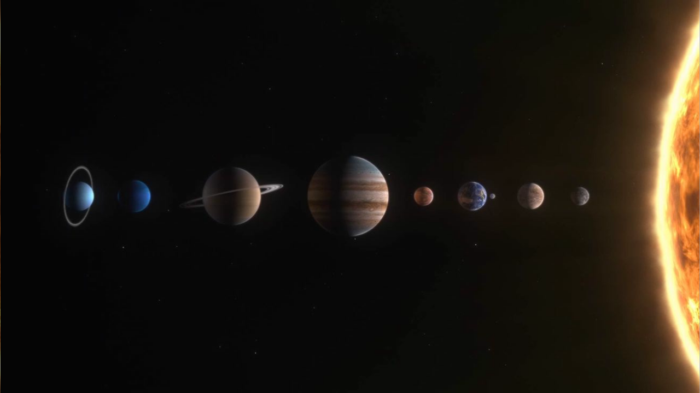

.svg)
СОЛНЕЧНОЙ СИСТЕМЫ
СОЛНЕЧНОЙ СИСТЕМЫ

01
Самая близкая к Солнцу и самая маленькая планета. Поверхность покрыта кратерами, как Луна, и испещрена уступами — следами сжатия при остывании ядра. Днём здесь +430°C, а ночью -180°C. Год длится 88 дней, а день — 59 земных суток.
исследовать02
Искажённый близнец Земли — такой же размер, но непригодна для жизни. Атмосфера из CO₂ создаёт чудовищный парниковый эффект: температура +460°C на поверхности. Облака из серной кислоты, давление в 90 раз выше земного. Венера вращается в обратную сторону.
исследовать03
Единственная известная планета с жизнью. 71% поверхности покрыто жидкой водой, атмосфера на 21% состоит из кислорода. Активная тектоника плит обновляет поверхность, а магнитное поле защищает от космической радиации.
исследовать04
Красная планета — холодная пустыня с вулканами и каньонами. Здесь находится самый высокий вулкан в Солнечной системе — Олимп (22 км). Атмосфера очень тонкая (1% от земной), но под поверхностью есть лёд, а возможно, и жидкая вода.
исследовать05
Красная планета — холодная пустыня с вулканами и каньонами. Здесь находится самый высокий вулкан в Солнечной системе — Олимп (22 км). Атмосфера очень тонкая (1% от земной), но под поверхностью есть лёд, а возможно, и жидкая вода.
исследовать06
Кольца — визитная карточка планеты. Тысячи колец из кусочков льда и пыли тянутся на сотни тысяч километров, но при этом они тоньше футбольного поля. Плотность Сатурна меньше воды — он мог бы плавать в океане, если бы нашёлся подходящий.
исследовать07
Ледяной гигант, который вращается "лёжа на боку". Ось наклонена на 98°, поэтому смена сезонов здесь экстремальная — полюса 42 года смотрят прямо на Солнце. Атмосфера из водорода, гелия и метана придаёт планете голубовато-зелёный цвет.
исследовать08
Ветреный гигант на окраине Солнечной системы. Здесь бушуют самые быстрые ветры — до 2100 км/ч. Тёмное Пятно — гигантский шторм размером с Землю — появляется и исчезает каждые несколько лет. Излучает в 2.6 раза больше тепла, чем получает от Солнца.
исследовать